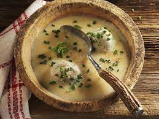

Timeless Turnip Soup

Description
What else is there to say? Time to turn up the heat and make this hearty, tasty, timeless turnip soup. Also there are mushrooms in it, which may or may not be something the vikings enjoyed in their free time.
Ingredients
- One tablespoon of olive oil
- One stick (eight tablsepoons of butter,) set aside one tablespoon
- Two teaspoons of coarse salt
- One large bay leaf
- Two tablespoons of honey
- Six ounces of whole milk
- One tablespoon of vegetable bouillan
- Sixteen ounces of vegetable broth
- One large onion
- Four large turnips
- Three portobello mushrooms, or whatever kind one wants
*** The broth and bouillan can be substituted for the chicken or beef versions
Steps
- Peel the onion, without crying.
- Finely dice mushrooms and the peeled onion, keeping them separate.
- Slice turnip into pieces, so that each one is roughly half of an inch in size.
- Heat the seven tablespoons of butter, and olive oil in a heavy dutch oven, over medium heat.
- Sautee the onions for two minutes, then add the turnips, salt, and bay leaf stirring until very fragrant.
- If the pan has dried out; add a bit more olive oil followed by the bouillan and honey, stirring constantly.
- When the bouillan, honey, and oil have turned into a homogenous liquid; add the milk and broth.
- Reduce the heat to medium-low and let the soup simmer until turnips are soft. Do not stir while waiting.
- The milk will have coagulated after simmering for roughly twenty minutes. Pay it no mind.
- In a separate saucepan heat the tablespoon of butter, and suatee mushrooms over medium heat for three minutes.
- Remove the bay leaf from the soup, and add the mushrooms.
- Puree the soup in a food processor or blender. Add more broth if the result is too thick!
- Serve the spectacular soup while it's hot! Either as an appetizer, or an enire meal.